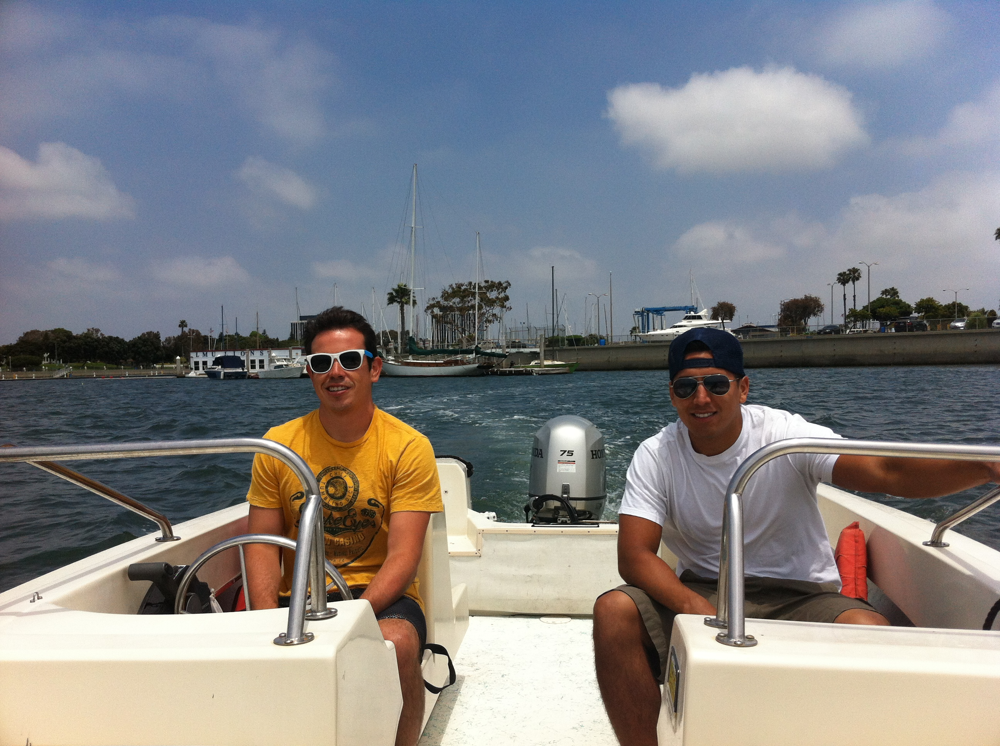
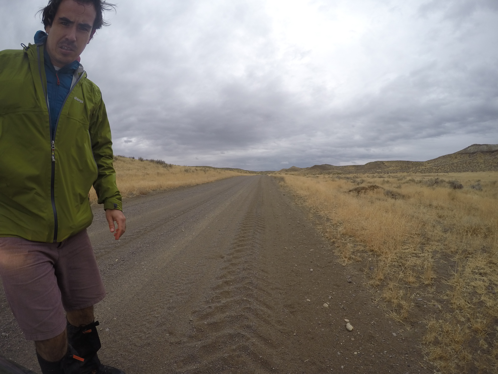
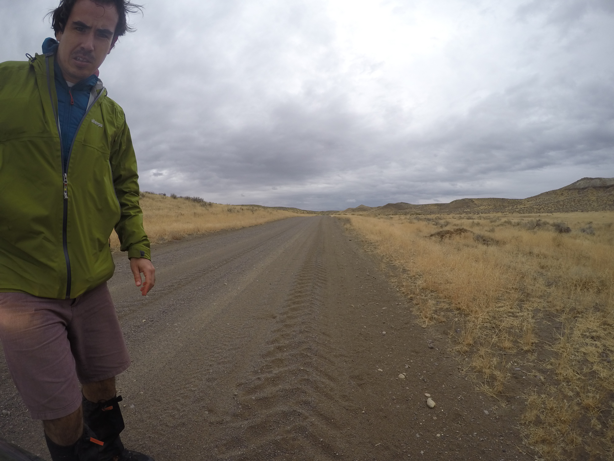
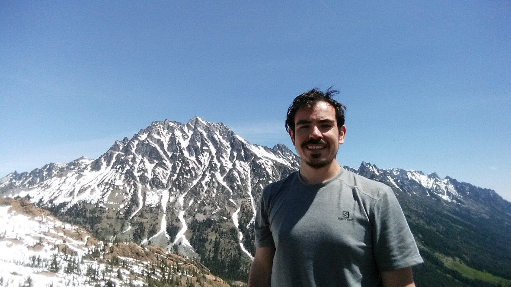
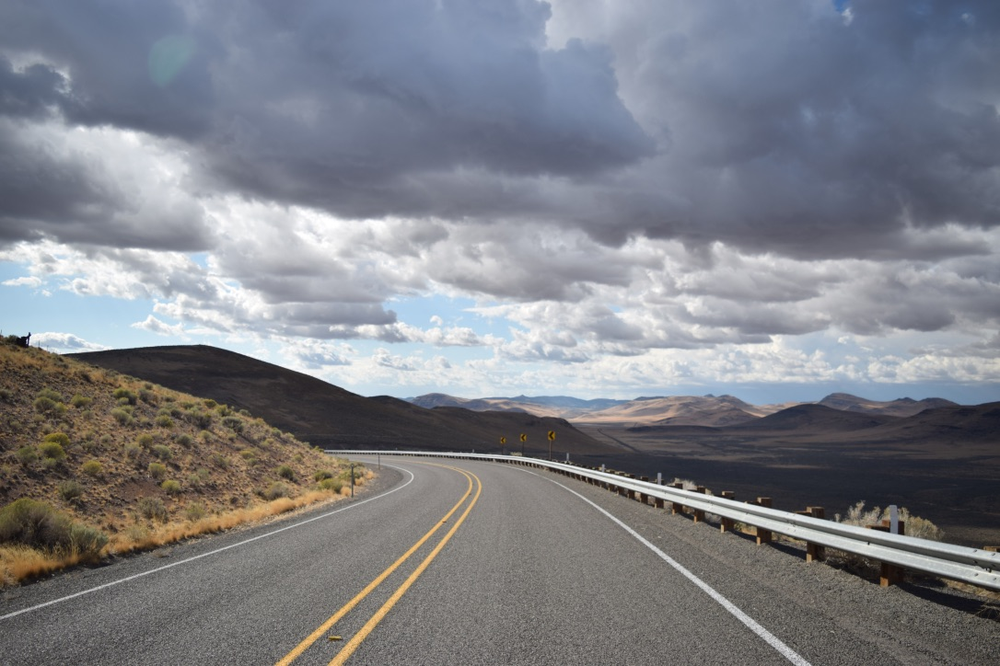
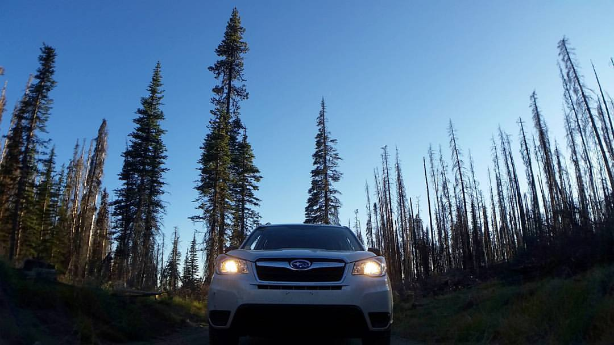
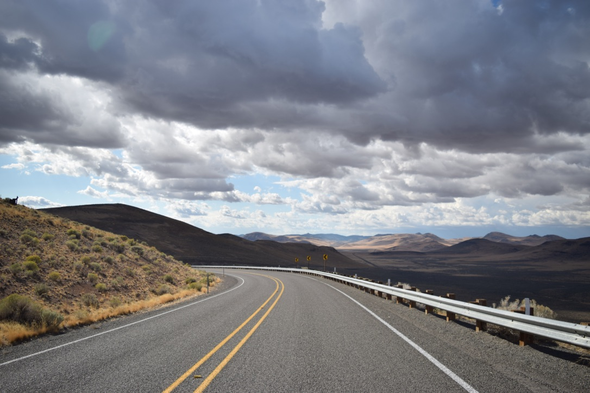

Los Angeles

I grew up in Playa Del Rey on the southern coast of California. I enjoyed swimming, cycling, video games, hiking, camping, and sailing as hobbies. My K-12 education was adminsitered by the Archdiocese of Los Angeles.
Despite all this I had no interest in becoming involved with the budding Tech scene of Silicon Beach.
 For the next ten years I received my formal education from a handful of local community colleges and a vocational nursing school where I earned an associates degree in nursing. I maintained employment through major retail corporations and several boat rental companies from Long Beach to Ventura. I left LA and moved to Portland a couple of days before my 28th black friday weekend.

For the next ten years I received my formal education from a handful of local community colleges and a vocational nursing school where I earned an associates degree in nursing. I maintained employment through major retail corporations and several boat rental companies from Long Beach to Ventura. I left LA and moved to Portland a couple of days before my 28th black friday weekend.

Portland

I've dabbled in several lines of work within multnomah county since moving to Portland. I've installed toilets, sandblasted and painted industrial equipment, monitored security systems, set up appointments, and delivered huggies on miserable, rainy sundays. I enjoy hobbies such as crafting furniture, racking up my netflix exposure, and chasing landscape pictures. As of 2017 I've been interested in changing my career to "coding". I view coding as a way to understand the machines I use and I want to integrate it more into my daily life through work and hobbies. Now I'm trying my second attempt at the Epicodus Boot Camp experience.
 There's no stopping; I'm in the zone now.

 There's no stopping; I'm in the zone now.